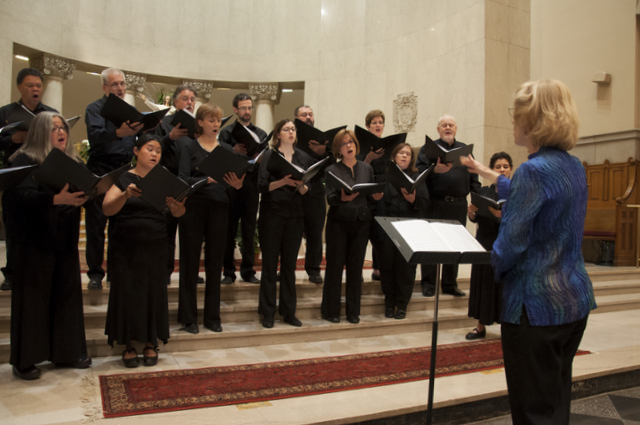

The Director
Jennifer Lester, Founder and Music Director of The Seraphim Singers, is among the outstanding choral conductors of her generation. Under her direction, The Seraphim Singers has developed into a virtuoso chorus with a highly advanced technique and a refined sense of style.
Critically acclaimed for ingenious, intrepid and imaginative programming, Ms. Lester is well known for her unique ability to present an imaginative and eclectic mix of high quality sacred choral music, bringing forth emotional, musically engaging and exhilarating performances of challenging but rewarding repertoire.
Well known for her dynamic and unflagging advocacy of new music, Ms. Lester has promoted the works of both nationally known and local living composers. Among the composers she has commissioned are Avner Dorman, Thomas Bold, Carson Cooman, Elliott Gyger, Graham Ramsay, Carlyle Sharpe, Julian Wachner, and James Woodman.
A highly gifted organist-choirmaster, Ms. Lester is the Music Director at Church of Our Saviour in Brookline, MA. She has also served as Associate Music Director and Organist of Saint Paul Parish in Cambridge, and is a past Dean of the Boston Chapter of the American Guild of Organists. In 2014, Ms. Lester made her New York conducting debut with The Choir of Trinity Wall Street in works by Duruflé, Wachner, and Howells. She has recorded both as organ accompanist and conductor with the Boston Bach Ensemble, The Seraphim Singers, the Philovox Ensemble, and the Boston Boy Choir.
A Fulbright scholar, Ms. Lester studied organ with Michael Radulescu at the Academy of Music in Vienna. She was awarded the Bachelor of Music degree with honors in organ performance from the New England Conservatory of Music, and the Master of Music degree in choral conducting from Yale University.
The Singers
The Seraphim Singers welcomes seasoned musicians from a variety of cultural and religious backgrounds. The ensemble consists mostly of organists, composers, and other professional musicians whose knowledge and experience nourishes a passion for arresting and demanding repertoire. However, our ranks also include engineers, professors, corporate professionals, and students who offer their musical talents to the ensemble.
If you are interested in auditioning for The Seraphim Singers, please contact us. Most auditions of potential members are conducted during the summer for the upcoming season. However, new singers can join the ensemble at the start of each of our three concert cycles within the season